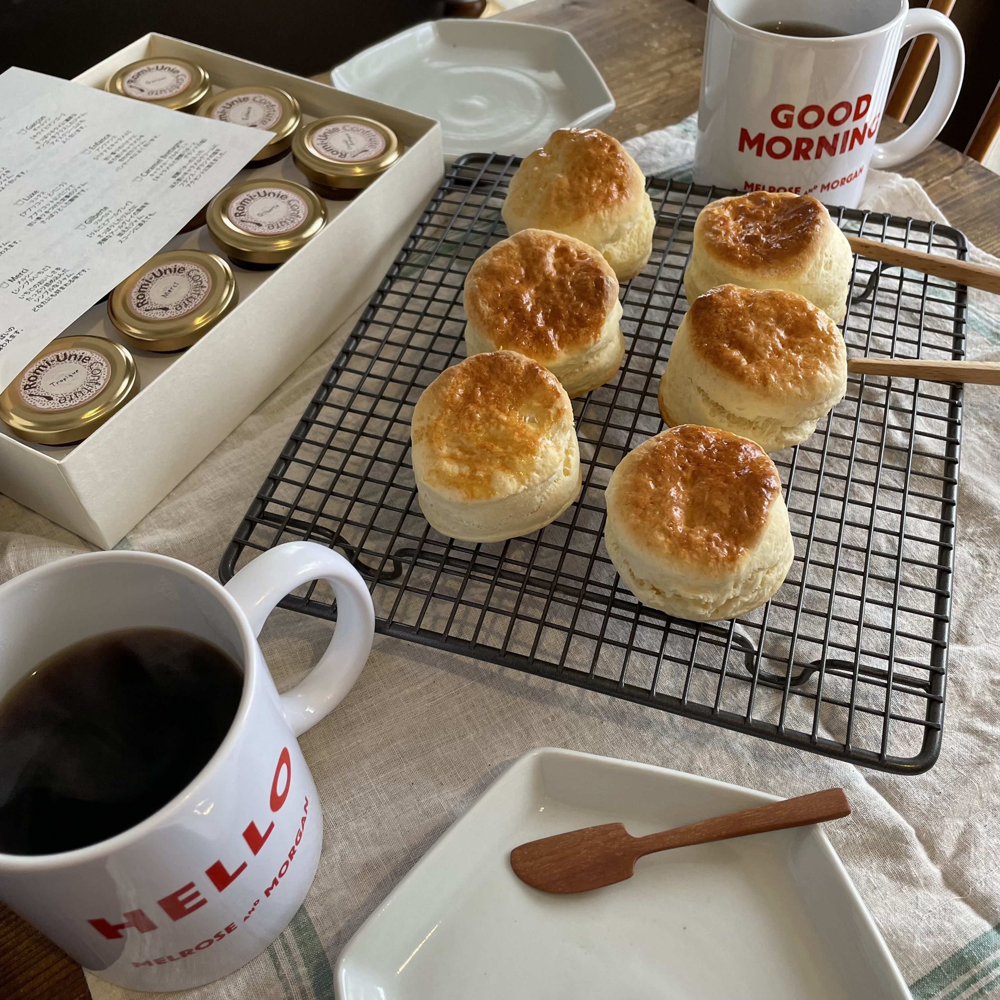
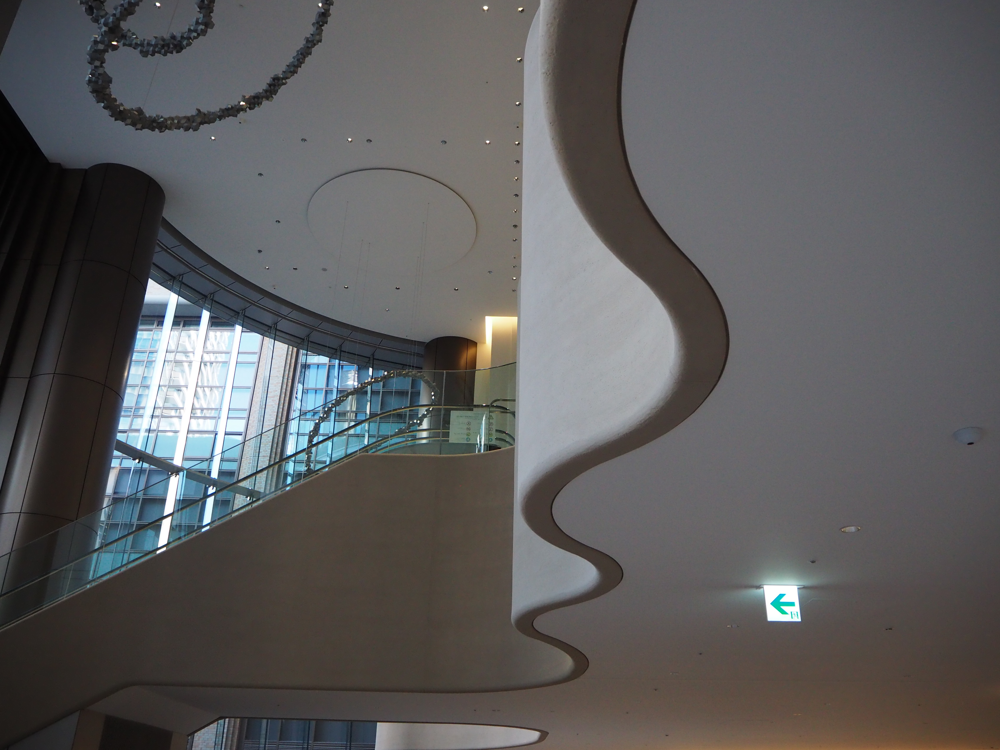
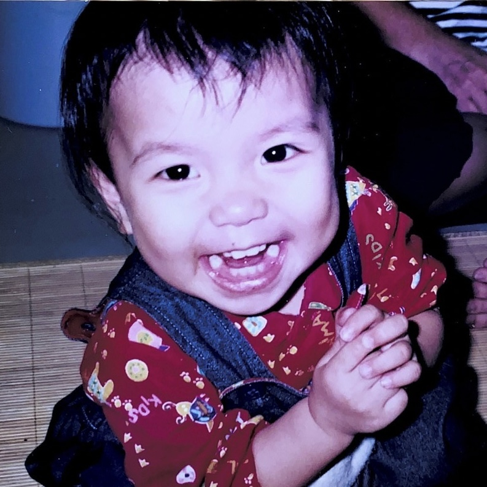
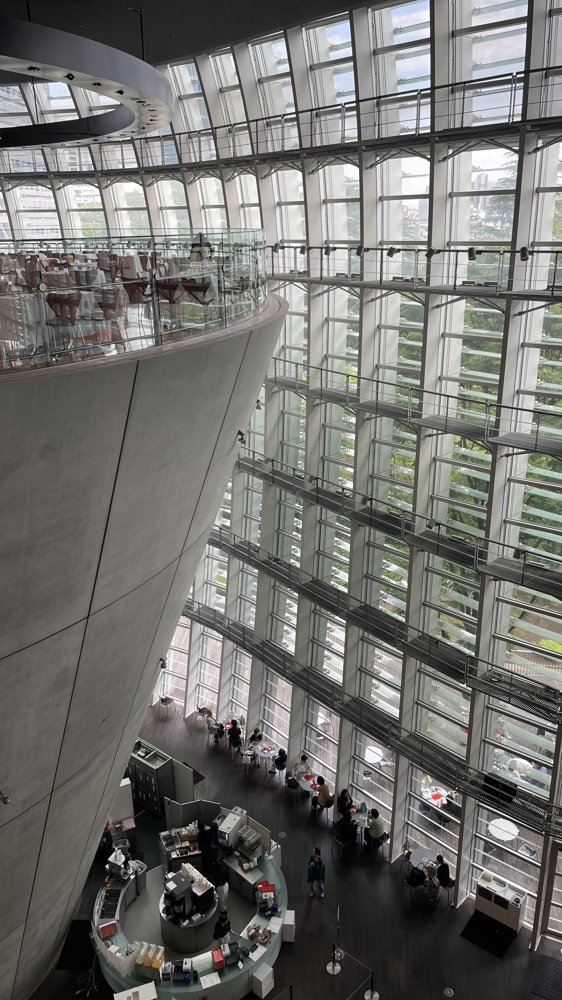
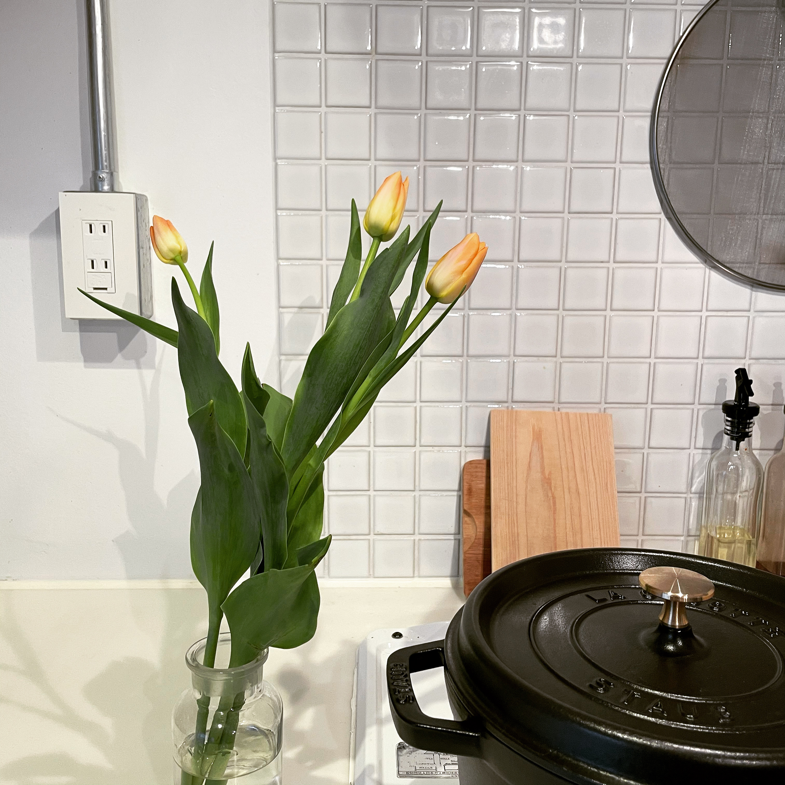
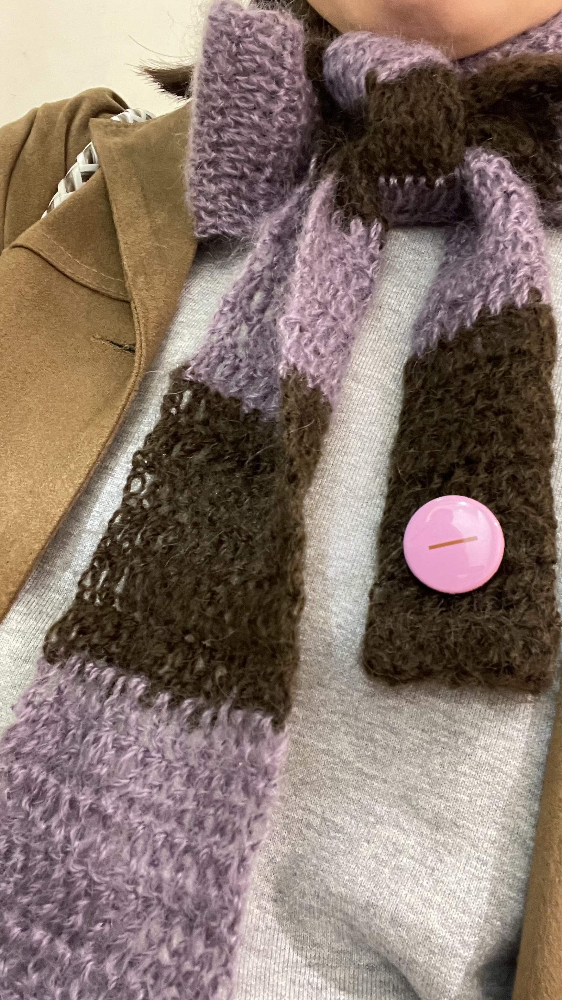

ABOUT

MATSUDA HAZUKI
小学校教諭として、児童の心に寄り添う教育に向き合ってきました。その後、アパレル・雑貨の販売員として従事しました。現在は、以前から興味のあったWEB業界への転職を目指し、職業訓練学校に通っています。WEBデザイナーになるために転職活動中です。
SKILLS
DESIGN
WEBサイト・バナーなどのグラフィックデザインができます。自分の満足のいくデザインではなく、お客様の思いや目的を大切にしたデザインをしていきたいと思っています。
使用ツール
Photoshop / illustrator
Figma
CODING
WEBサイトの正しい文書構造を意識し、裏側のコードまで読みやすく整えることを大切にしています。どの画面サイズで見ても崩れないレスポンシブ実装が可能です。
使用ツール
HTML / CSS / JavaScript
Visual Studio Code
STRENGTHS
01
共感力
誰かの役に立ちたいという想いを原動力に、どんな年代の方とも円滑に話せる共感力を培ってきました。この「相手を大切にする心」をWeb制作の軸に据え、クライアントの言葉の裏にあるニーズや、サイトを訪れるユーザーの細かな心理に寄りたいと思っています。
02
情報整理力
物事を自分の中でしっかり理解できるように噛み砕き、伝わりやすい言葉や形に整理することを心がけています。考えすぎてしまう時は一度文字に書き出すなど客観性を大切にしており、この情報整理力を活かして、ユーザーが知りたいことをす迷わずに知ることのできるサイトを構築していきたいと思っています。
03
改善力
見通しが持てるように事前の計画を立て、優先順位を明確にしながらマルチタスクをこなしてきました。現状に満足せず「もっと良くするためにはどうすべきか」を常に考え、周りの声にも耳を傾けながら、より良い環境や成果物へと柔軟に改善し続ける姿勢を大切にしています。
BIOGRAPHY
2016
大学卒業後、小学校教員として６年間勤務。担任業務と併せて、学校行事運営の主任も務めた。
2022
自分の好きなものに囲まれて働きたいと思い、ライフスタイル雑貨・アパレルのショップに販売員として勤務。
2025
ライフスタイルに合わせて派遣社員として勤務。金融関係の庶務事務の担当として、計画的なスケジュール管理のもとマルチタスク業務に従事。
2026
以前から興味があったWEBデザインを学ぶため、職業訓練校に在籍。Photoshop、HTML/CSS、Figma等の技術習得に励む。
MEMORIES





